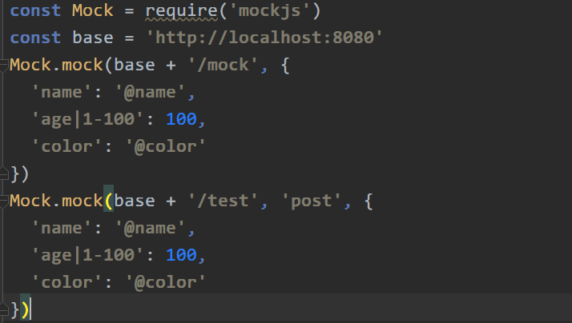
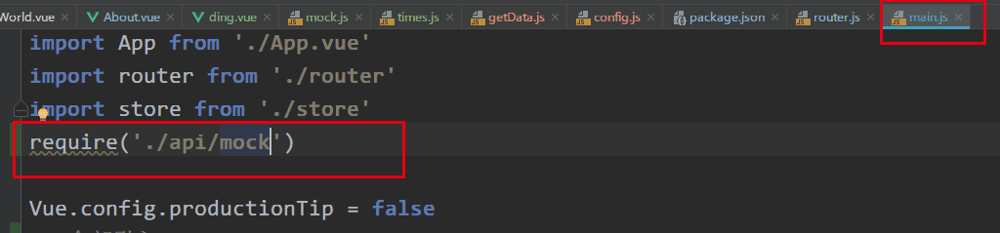
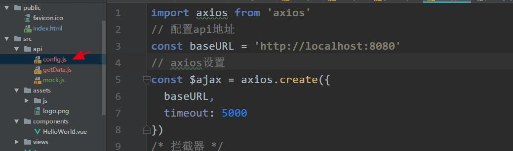
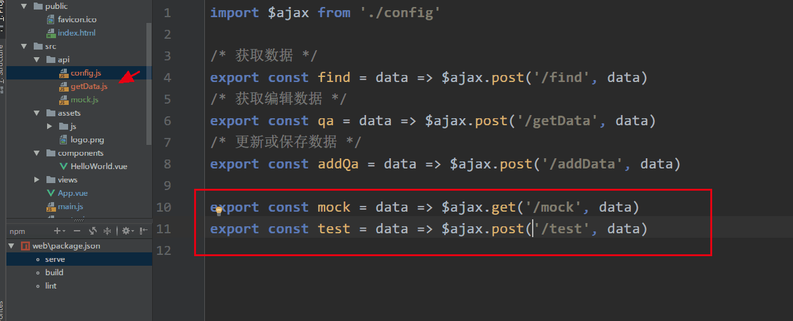
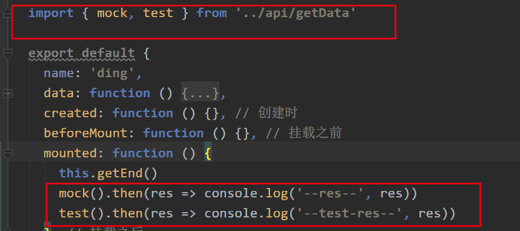

如果你看了标题以为我会告诉你怎么安装,那么你想错了..
npm install mockjs --save-dev下面是使用教程,全是图哦,幸福感满满有没有

// xx/mock.js
import Mock from 'mockjs'
const base = 'http://localhost:8080'
Mock.mock(base + '/mock', {
'name': '@name'
})
Mock.mock(base + '/test', 'post', {
'age|1-100': 100
})
export default Mock细心得你会发现代码和图上不一样,为啥子呢,这个你需要了解一下两者得区别 require，import区别？ 
// main.js
/* mock */
import './xx/mock' 这里一定要注意导出哦
// config.js
import axios from 'axios'
// 配置api地址
const baseURL = '/api'
// axios设置
const $ajax = axios.create({
baseURL,
timeout: 5000,
withCredentials: true // 跨域cookie
})
export default $ajax
// getData.js
import $ajax from './config'
/* 测试 */
export const getName = data => $ajax.get('/mock', data)
我相信聪明得你一定五分钟都没有用到就 Get√ 拜拜,下期再见